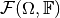
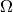
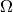
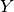
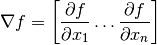
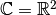

On the different notions of derivative¶
The concept of a derivative is one of the core concepts of mathematical analysis, and it is essential whenever a linear approximation of a function in some point is required. Since the notion of derivative has different meanings in different contexts, the intention of this guide is to introduce the derivative concepts as used in ODL.
In short, the derivative notions that will be discussed here are:
Derivative. When we write “derivative” in ODL code and documentation, we mean the derivative of an
Operatorw.r.t to a disturbance in its argument, i.e a linear approximation of for small .
The derivative in a point
.
The derivative in a point  is an
is an Operator.Gradient. If the operator
 is a
is a functional, i.e. , then the gradient is the direction in which increases the most.
The gradient in a point is a vector in  such that .
The gradient operator is the operator
such that .
The gradient operator is the operator ](../_images/math/d480c9b9dd5d75e67732a9905a22ba555383f8d4.png) .
.Hessian. The hessian in a point
is the derivative operator of the gradient operator, i.e. .Spatial Gradient. The spatial gradient is only defined for spaces  whose elements are functions over some domain taking values in or
 .
It can be seen as a vectorized version of the usual gradient, taken in each point in .
.
It can be seen as a vectorized version of the usual gradient, taken in each point in .Subgradient. The subgradient extends the notion of derivative to any convex functional and is used in some optimization solvers where the objective function is not differentiable.
Derivative¶
The derivative is usually introduced for functions via the limit
Here we say that the derivative of  in is
in is  .
.
This limit makes sense in one dimension, but once we start considering functions in higher dimension we get into trouble.
Consider – what would mean in this case?
An extension is the concept of a directional derivative.
The derivative of in in direction  is :
is :

Here we see (as implied by the notation) that is actually an operator
This notion of derivative is called Gâteaux derivative.
If we add the explicit requirement that is a linear approximation of at , we can rewrite the definition as
where the limit has to be uniform in .
This notion naturally extends to an Operator between Banach spaces and  with norms and , respectively.
Here is defined as the linear operator (if it exists) that satisfies
This definition of the derivative is called the Fréchet derivative. If it exists, it coincides with the Gâteaux derivative. This is the case for most operators, but some are only differentiable in the Gâteaux sense, not in the Fréchet sense.
Another important difference between the two notions is that the Gâteaux variant (directional derivative) can be approximated by finite differences in a simple way, as it is done in ODL’s NumericalDerivative, while there is no simple way to computationally realize the Fréchet definition.
Therefore, “derivative” in ODL generally means “Gâteaux derivative”, which is the same as “Fréchet derivative” except for a few special cases.
Rules for the derivative¶
Many of the usual rules for derivatives also hold for the operator derivatives, i.e.
Linearity
Chain rule
Linear operators are their own derivatives. If
is linear, then
Implementations in ODL¶
The derivative is implemented in ODL for
Operator’s via theOperator.derivativemethod.It can be numerically computed using the
NumericalDerivativeoperator.Many of the operator arithmetic classes implement the usual rules for the derivative, such as the chain rule, distributivity over addition etc.
Gradient¶
In the classical setting of functions , the gradient is the vector

This can be generalized to the setting of functionals mapping elements in some Banach space to the real numbers by noting that the Fréchet derivative can be written as
where lies in the dual space of , denoted . For most spaces in ODL, the spaces are Hilbert spaces where by the Riesz representation theorem and hence .
We call the (possibly nonlinear) operator the Gradient operator of .
Implementations in ODL¶
The gradient is implemented in ODL
Functional’s via theFunctional.gradientmethod.It can be numerically computed using the
NumericalGradientoperator.
Hessian¶
For functions , the Hessian in a point is the matrix such that
![H(x) =
\begin{bmatrix}
\dfrac{\partial^2 f}{\partial x_1^2} & \dfrac{\partial^2 f}{\partial x_1\,\partial x_2} & \cdots & \dfrac{\partial^2 f}{\partial x_1\,\partial x_n} \\
\dfrac{\partial^2 f}{\partial x_2\,\partial x_1} & \dfrac{\partial^2 f}{\partial x_2^2} & \cdots & \dfrac{\partial^2 f}{\partial x_2\,\partial x_n} \\
\vdots & \vdots & \ddots & \vdots \\
\dfrac{\partial^2 f}{\partial x_n\,\partial x_1} & \dfrac{\partial^2 f}{\partial x_n\,\partial x_2} & \cdots & \dfrac{\partial^2 f}{\partial x_n^2}
\end{bmatrix}](../_images/math/ecdc5b8b0e728947d978c1b46627c4ee6f29e7a1.png)
with the derivatives are evaluated in the point .
It has the property that that the quadratic variation of is
but also that the derivative of the gradient operator is
If we take this second property as the definition of the Hessian, it can easily be generalized to the setting of functionals mapping elements in some Hilbert space to the real numbers.
Implementations in ODL¶
The Hessian is not explicitly implemented anywhere in ODL. Instead it can be used in the form of the derivative of the gradient operator. This is however not implemented for all functionals.
For an example of a functional whose gradient has a derivative, see
RosenbrockFunctional.It can be computed by taking the
NumericalDerivativeof the gradient, which can in turn be computed using theNumericalGradient.
Spatial Gradient¶
The spatial gradient of a function (with adequate differentiability properties) is an element in the function space such that for any :
It is identical to the above notion of functional gradient for the special case of functions .
Implementations in ODL¶
The spatial gradient is implemented in ODL in the
Gradientoperator.Several related operators such as the
PartialDerivativeandLaplacianare also available.
Subgradient¶
The Subgradient (also subderivative or subdifferential) of a convex function , mapping a Banach space to , is defined as the set-valued function whose values are:
For differentiable functions, this reduces to the singleton set containing the usual gradient.
Implementations in ODL¶
The subgradient is not explicitly implemented in ODL, but is implicitly used in the proximal operators. See Proximal Operators for more information.
Notes on complex spaces¶
All of the above definitions assume that the involved spaces are vector spaces over the field of real numbers. For complex spaces, there are two possible ways to generalize the above concepts:
1. Complex space as the product of two real spaces¶
Here we indentify a space , for instance or , with the product space  using the bijective mapping
using the bijective mapping
This purely geometric view is the practically more relevant one since it allows to simply adopt all rules for real spaces in the complex case. It is endorsed in ODL unless otherwise stated.
2. Complex derivative¶
The complex derivative is a notion from complex analysis that has vastly more far-reaching consequences than differentiability of real and imaginary parts separately. Since complex differentiable functions are automatically infinitely many times differetiable, this derivative notion strongly restricts the class of functions to which its rules can be applied, thereby limiting the usefulness for our purposes.
For instance, the Gâteaux derivative of an operator between complex spaces would be defined as
with the difference that here, the limit is understood as going along arbitrary curves in the complex plane that end up at 0. This definition is both harder to calculate explicitly and harder to approximate numerically.
Complex <-> Real mappings¶
Some operators are defined as mapping from a complex space to a real space, or vice versa. Typical examples are the real-to-complex Fourier transform, or taking the real part of a function or vector. Such operators are somewhat corner cases of functional analysis that are not well covered in the literature.
A peculiar issue with this setup is that linearity in domain and range have to be checked with different sets of scalars. In particular, testing linearity with complex scalars is invalid in real spaces, such that these kinds of operators can never be formally complex-linear, only linear in the sense of identifying a complex number with a 2-vector of real numbers.
Another issue is adjointness: When defining the adjoint with respect to the  identification, “lossy” operators do not satisfy the adjoint condition fully. For instance, the real part operator can be rewritten as a projection operator
and as such it is linear and has the adjoint . However, when transferring this back to the complex interpretation, we get
but
Therefore, ODL takes the following pragmatic approach for complex <-> real operators:
Derivatives are taken in the real sense. Linearity is set to
Truefor an operator if for all
if for all  .
This property can be used to optimize calculations with derivatives, since the derivative operator does not depend on the point.
Linearity in the sense of complex vector spaces is currently not reflected by any flag in ODL.
.
This property can be used to optimize calculations with derivatives, since the derivative operator does not depend on the point.
Linearity in the sense of complex vector spaces is currently not reflected by any flag in ODL.Even for formally non-linear derivative operators, an adjoint can be defined, which will not be complex-linear, either. It satisfies the adjointness test only when comparing real-valued inner products.